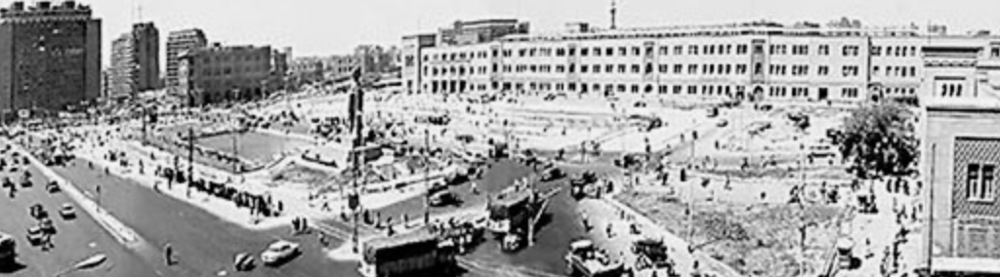

Staying With The Rubble
Kyle Feuer
Across time, people have returned to what remains—crumbling shelter, fragments of daily life, destroyed memorabilia, broken kinship—not only to survive destruction, but to make meaning from it. Whether after flood or famine, displacement or war, we sift through what is left, searching not only for the lost but for the connective tissue between past and future. We search for something deeper—meaning, memory, a narrative to help make sense of overturned reality. We sort into piles: things to let go, things to mend, things to memorialize, and things to keep. The formalization of these piles, sometimes monuments, are often our collective attempt to narrativize what remains. They fix loss into physical form, impose memory into space, and construct continuity where rupture has occurred. But in doing so, they do not simply remember—they control what is remembered, and how.
Theorists have long examined the intersection and implications of memory, power, and spatial ethics embedded in monumentality. From Alois Riegl’s 1903 foundational exploration of the commemorative value of monuments (Riegl, 1982) to the utopian 1943 Nine Points on Monumentality by J. L. Sert, F. Léger, and S. Giedion (Sert, Léger, Giedion, 1943), early modern theorists sought to reconcile permanence with public meaning. Mid-century thinkers such as Lewis Mumford (Mumford, 1961), Michel Foucault (Foucault, 1986), and Henri Lefebvre (Lefebvre, 2009), whether directly addressing monumentality or developing broader spatial theory, examined how architecture and urban space reinforce authority, condition social control and collective behavior, and encode ideology within the city. Contemporary theorists such as Michael Sorkin (Sorkin, 1994), Eyal Weizman (Husain and Weizman, 2024), and Dolores Hayden (Hayden, 1995) extend these critiques by exposing how monuments and spatial design can erase contested histories and advocate instead for practices that confront occupation and foreground ethical memory.
In an era shaped by global interconnectedness, disinformation, media impermanence, and the oversaturation of memory through digital channels, the socially constructed memory theories of French philosophers Maurice Halbwachs (Halbwachs, 2022) and Pierre Nora (Nora, 1989) offer a beginning guide for grounding contemporary, well-intentioned approaches to monumentality. Their work reminds us that memory is not simply preserved in space—it is produced through it. Halbwachs posits that statues and memorials do not simply remember the past but dictate how it should be remembered and thus shape our “collective memory” (Halbwachs, 2022), a term he coined in arguing for the inherently social aspect of memory. Similarly, Nora introduces the idea of “lieux de mémoire”, sites or objects that serve as remembrance in building the national narrative through memorial consciousness. (Nora, 1989) Together, these theorists remind us that monuments are not neutral vessels but active instruments in shaping historical consciousness and underscore the ethical imperative to proactively reimagine commemorative practices, especially in spaces marked by occupation, violence, and erasure.
In the case of Gaza, these tensions in monumentality and memory take on an urgent and complex significance, particularly in the wake of the events following October 7th. Amid the ongoing siege and devastation that has taken over 50,000 lives (Bennett, 2025) and obliterated more than 60% of Gaza’s built environment (Van Damme and Le Cadre, no date), leaving behind a topography of ruin, the question of monumentality and memorialization becomes not only an ethical concern, but a spatial one. The desire to remember—to mourn, to testify, to resist—presses against the near-total decimation of urban space itself. Gaza’s reality demands a rethinking of what monuments can and should be. The conventional model—grand statues, immovable stone memorials, state-sanctioned narratives—falters not only in times and places of peace, but in Gaza—a context where the state of Palestine itself is in liminality, where sovereignty is contested, and where destruction is cyclical. If monumentality has historically served as a tool of national and communal identity and historical continuity, then Gaza challenges us to rethink monumentality of resistance, of impermanence, of testimony in motion. The need to remember persists, but how?
This essay takes up this question by exploring the theoretical and material possibilities of monumentality in Gaza. Drawing primarily from Christina Sharpe’s In the Wake: On Blackness and Being (Sharpe, 2016), Ursula K. Le Guin’s The Carrier Bag Theory of Fiction (Le Guin, 1988), and Cornelia Parker’s exploded sculptures (Parker, 1991), while incorporating other spatial and ethical theorists, I propose a reframing of memorial practice—one that is non-heroic, decentralized, responsive, and embedded within the lived material of Gaza itself. Rubble—simultaneously a record of destruction, a resource of survival, and a symbol of resilience—may become the language through which Gaza remembers, rebuilds, and resists.
Monumentality Under Scrutiny
Before we can imagine new memorial practices responsive to Gaza’s material and political realities, we must first reckon with traditional monumentality—its assumptions, spatial politics, and ethical contradictions. Historically, monuments have not simply remembered the past; they have dictated how it should be remembered, fixing dominant narratives into physical space and shaping national consciousness. In doing so, they have often served to inscribe state power and suppress contested histories. These structures—far from neutral—have reinforced hegemonic interests, distorted memory, and failed to contribute positively to public space. Only by understanding the limitations and failures of this monumental tradition can we begin to conceptualize a form of remembrance that resists domination, affirms life, and responds to the ongoing conditions of erasure and resilience in Gaza.
Monuments are commonly defined as ‘statues, buildings, or other structures to commemorate notable persons or events.’ (Krasny, 2023) Yet, as Françoise Vergès posits, ‘monuments are just the result of political choices that testify to what the powers that be value and the memory they want to stage. They are the result of decisions that impose on the public landscape a narrative, personalities, and aesthetics. None of it is neutral.’ (Grace quoting Vergès, 2023) In practice, the ability to erect and maintain monuments has largely rested with those in positions of power which in turn reinforces hegemonic narratives and institutional authority. As Brighenti (Brighenti, 2010) explains, the ‘term monument derives from the Latin verb admŏnĕo -ēre, “to admonish.”’ The monument not only remembers—it instructs. It warns, disciplines, and affirms. Thus, monuments, especially those placed in public space with state approval, become sites where state power is exercised to privilege singular historical narratives and norms.
The contemporary architectural theorist, Elke Krasny, whose work focuses on the politics of remembrance, challenges the assumed benevolence of such memory projects and asks us instead to consider the human cost. She provocatively asks, ‘how could thinking with care lead to understanding as well as resistance and refusal to damage to the public by cultural property, harm by monuments and sites?’—a reversal of the protective logic found in The Hague’s Convention for the Protection of Cultural Property that aims to defend cultural property (e.g. monuments) from human harm. (Krasny, 2023) Her work reorients our understanding of memorial harm: not simply in what is forgotten or destroyed, but in what is forcibly remembered, as monuments shift from passive markers of memory to active agents of power—imposing narratives, inflicting spatial harm, and casting the public as subjects acted upon.
Consider, for instance, the former placement of the Colossal Statue of Ramesses II in Cairo’s Midan Ramses Square (prior to its relocation to the Grand Egyptian Museum). While the statue itself holds deep religious, cultural, and spiritual significance, its positioning in the square created physical risks for individuals and disrupted the communal flow of the urban environment. Visitors, drawn to this imposing object of significance, were forced to cross heavily trafficked roads to access the monument, endangering their own safety and contributing to increased congestion and irregular vehicular circulation. Here we have an example of what Krasny would call cultural property inadvertently causing spatial harm to the public.
Another, more ethically charged, example of damage to the public by cultural property is the statue of English merchant Edward Colston in Bristol, UK—one of many monuments commemorating colonial-era businessmen. Colston, memorialized for his philanthropic contributions to education and public works, was also a central figure in the transatlantic slave trade. (Gayle, 2022) Erected in 1895, the statue presented a sanitized narrative of success, devoid of critique or acknowledgment of the immense suffering tied to the accumulation of his wealth. It bore all the hallmarks of traditional monumentality: grandeur, central public placement, elevation, permanence, the heroic singular figure, and reverent inscription. As Krasny might argue, such a monument inflicts harm by endorsing, through memorialization, an ethical framework that privileges capitalist heroism over historical accountability. Its relationship to temporality assumes, she would say, a “production of permanency” (Krasny, 2023) imagining the commemoration of the past as future by determining ‘how to define the future of memory.’ (Krasny, 2023) The statue was, in fact, toppled in 2020 during the Black Lives Matter protests by self-proclaimed anti-racist campaigners. Though initially charged with criminal damage, the campaigners were acquitted by a jury of their peers in a vote of eleven to one, confirming, according to one Labour MP, the shared public view that ‘the real crime was the fact the statue was still there when protesters pulled it down.’ (Gayle, 2022) The Colston statue did not merely remember—it institutionalized the acceptance of violence, embedding it into the ethical fabric of public space and projecting a state-sanctioned narrative in which personal success eclipses the atrocities committed in its pursuit, a narrative that seems incongruent with the times.


Charlotte Grace, a contemporary theorist focusing on the sociospatial dimensions of identity and empire (Royal College of Art, no date), builds on the critique of traditional monumentality by deconstructing it through the lens of ceremony, introducing a critical alternative to static commemoration. For Grace, conventional monuments fail precisely because they are disconnected from lived experience—they are static, distanced, and alienating. (Grace, 2023) In contrast, she defines ceremony as a ‘spatiotemporal process involving embodied acts of commemoration, abstraction, reflection and/or transformation to ascribe and reassert political, cultural, and/or spiritual value.’ (Grace, 2023) Ceremonial practices, in this sense, have the potential to reanimate space, integrating memory into the rhythms of daily life. Quoting anthropologist Rachel Jones, Grace notes that such rituals create “sacred architecture” (Grace quoting Jones, 2023)—spaces of transformation rather than fixation—echoing Silvia Federici’s claim that, ‘transformative powers stem from the ability to appropriate spaces.’ (Grace quoting Federici, 2023) The Colston statue, fixed in its relation to the public since 1895, exemplifies the failure of traditional monumentality to evolve alongside public ethics. It had not adapted in ways that allow communities to meaningfully reassess or reassert political or cultural value, and thus failed to provide what Grace calls, ‘useable, meaningful space for the living.’ (Grace, 2023) One can imagine, instead, a commemorative ceremony at the statue’s original site in Bristol—one that may have begun in 1895 to honor Colston’s philanthropic contributions but, over the course of a century, evolved to incorporate broader public reckonings with the transatlantic slave trade. Such a ceremony would continue today not as fixed celebration, but as a dynamic, ethical act of remembrance for the dead and reflection for the living.
Ultimately, the fraught nature of traditional monumentality—with its entanglement with power, spatial and temporal concerns, and ethical omissions—demands a radical reimagining of how we memorialize trauma and honor loss. Krasny and Grace push us to rethink monumentality—as active participatory practices that operate across space and time, center changing dynamic communal needs, and orient toward transformation rather than closure. In a context like Gaza, where space is hyper-scarce, continually ruptured, and subject to cycles of destruction, and where power already feels outside the grasp of everyday Gazans and struggles for national sovereignty persist—this critique becomes especially urgent. Perhaps, memorialization could become a collective, iterative act of picking up the rubble and rebuilding the unbuilt environment, a ceremony where remembrance emerges through participation and care.
Gaza In The Wake
In confronting the inadequacy of traditional monuments and envisioning alternative forms of collective memory grounded in ceremony and care, we begin to explore how memory itself is lived and endured across time. It is at the intersection of absence and presence, between the impossibility of closure and the necessity of testimony, that Christina Sharpe’s concept of “the wake” (Sharpe, 2016) becomes vital. Her work does not concern itself with the monumental object per se, but with the afterlife of historical violence, grief, survival, persistence, memory, and care—core concepts for ethical memorialization in Gaza.
In her 2016 book In the Wake: On Blackness and Being, Sharpe introduces her concept of the wake as, ‘a conceptual frame of and for living blackness in the diaspora in the still unfolding aftermaths of Atlantic chattel slavery,’ noting that ‘racism, the engine that drives the ship of state’s national and imperial projects …cuts through all of our lives and deaths inside and outside the nation, in the wake of its purposeful flow.’ (Sharpe, 2016) We all, though most specifically black people, live in the wake of catastrophe, slavery, empire, and state violence, and life will continue to unfold here as the fundamental reality of the state’s engine persists. Sharpe combines this physical wake with a state of mind, ‘wake; the state of wakefulness; consciousness.’ (Sharpe, 2016) To be in the wake is to be conscious of the, ‘unfinished project of emancipation,’ (Sharpe, 2016) a life lived in the continuous disruptive force of terror, occupation, and genocide. Sharpe specifically asks herself and others to do “wake-work,” the necessary thinking and care to stay in the wake, think in the wake, and be conscious of the thinking in the wake (Sharpe, 2016). This insistence by Sharpe challenges conventional memorial practices that aim for closure through fixed monuments and begins to shape the conceptual framework for approaching monumentality and memorialization in Gaza.
For Sharpe, memory operates as a continuous, disruptive force in the lives of those who endure trauma. In her formulation, the wake is not a static repository of the past; rather, it is an ongoing state. This definition underscores that the wake is a lived condition, one in which trauma, loss, and the residue of historical violence are not confined to a completed moment but perpetually rupture the present. As she articulates, ‘in the wake, the past that is not the past reappears, always, to rupture the present.’ (Sharpe, 2016) This assertion positions memory as an active, destabilizing force—one that defies neatly encapsulating trauma and insists on its continual rearticulation. The temporal thread of monumentality and memory that Krasny and Grace highlight reemerges, emphasizing this cyclical liminality of memory and monument that resist closure by traditional monumentality. The continued existence of the Colston statue up until 2020, without any acknowledgement of his explicit ties to the slave trade, is explicit evidence of this continued rupture of trauma embedded in public space: the state-approved memorialization of a slave trader actively contributing to the production of the wake through time. In contrast to static memorials that risk attempting to complete history, the call to “stay in the wake” (Sharpe, 2016) is an invitation to engage in ongoing wake-work—a process of collective remembrance that remains perpetually open to reinterpretation and resistance.
Moreover, Sharpe emphasizes that wake-work is not passive reflection but, ‘important work of sitting (together) in the pain and sorrow of death as a way of marking, remembering, and celebrating a life.’ (Sharpe, 2016) This perspective invites us to reconceive memorialization as a communal, iterative process that resists the closure and finality imposed by traditional monuments. Instead of seeking to solidify the past into a finished object, wake-work requires that thinking and care remain active—perpetually aware of the ruptures that define lived experience. In the example of Colston, the wake-work is all the conscious work that surrounds the toppling of the statue: the conversations beforehand, the complaints to the council, the public letters, the public demolition, and the continuing conversation of what should take its place. In this way, the wake becomes not a moment of closure but a space of conscious engagement, echoing Halbwachs’s insight that collective memory is ‘an act of recollection’ (Halbwachs, 2022) that is continuously remade by communal practices.
Sharpe’s concept of the wake offers a profoundly resonant framework for thinking about life in Gaza—not as a place marked by past trauma alone, but as a space actively and perpetually shaped by the ongoing churn of state violence, racism, and settler colonialism. Gaza is not merely in ruin; it is in the wake. On its surface, the current state of Gaza’s urban fabric is that of a city violently churned, disrupted, and dismembered—its neighborhoods overturned by the engine of the Israeli state and enabled by global complicity. The visual juxtaposition of the below two images—one of Gaza’s leveled cityscape and one of a turbulent wake—illuminates this connection with arresting clarity. Like the disrupted waters left behind by a passing slave ship, Gaza bears the markers of a force that has not only passed through, but continues to structure the conditions of life and survival. The image of Gaza is not just evidence of destruction, but a visual representation of Sharpe’s wake: a place caught in the ongoing force of trauma and a space in which wake-work becomes both necessary and urgent.

Applying Sharpe’s wake-work to Gaza offers not only a mode of comparison and mourning, but also a methodology of resistance. As Donna Haraway writes in Staying with the Trouble: Making Kin in the Chthulucene, we must remain with the complexity of crisis and grief—not seeking resolution, but forging kinship, care, and meaning in the midst of ongoing devastation (Haraway, 2016). In this sense, staying in the rubble becomes both an ethical position and a political act: a refusal to abandon the present, a commitment to wake-work in the rubble. To stay in the wake is to refuse the closure offered by traditional memorialization, insisting instead on memory as an ongoing act—lived and fragmented. In Gaza, where trauma is not past but ruptures recurring in the present as explosions, occupation, and suffering, the wake is not metaphor—it is material. It is the churned cityscape, the dislocated bodies, the recurring and recurring and recurring loss. The wake here asks us not to move past, but to practice presence within absence.
‘How does one memorialize that which is still unfolding?’ (Sharpe, 2016) What kind of memorial practice can emerge in a space where the violence has not ended, and the future remains fluid? This condition undermines the very foundations of traditional monumentality, where no monument can hold the totality of loss, where resources and time cannot be spared to erect monuments, and where permanence itself is illusory. In such a setting, the idea of installing fixed structures becomes not only impractical but ethically fraught. Traditional monuments, often predicated on closure and spatial dominance falter in this face of instability, scarcity, and the risk of becoming future targets.
So, what is the wake-work of monumentality in Gaza? How can we sit together, in great loss, to reimagine memorial practice that can evolve in tandem with the lived realities of those it seeks to serve? Sharpe’s work challenges us to recognize that memory, when left to static, traditional monumentality, fails to capture the dynamic, often painful, reality of survival under continuous trauma. Wake-work invites a rethinking of monumentality as a collective, iterative process that aligns with Grace’s notion of ceremony as a spatiotemporal act of remembrance and echoes Krasny’s call to design practices of care and protection rather than domination. To engage in wake-work in Gaza, then, is to participate in a kind of political and ethical storytelling—one that resists state-imposed narratives and instead builds memory through ongoing gestures—assembling and reassembling meaning, community, and space from the rubble; as Ursula K. Le Guin would posit: a collective act of gathering, of telling stories that hold, rather than conquer.
A New Container for Memory
If Christina Sharpe teaches us how to dwell in rupture—how to practice memory within the ongoing churn of catastrophe—then Ursula K. Le Guin offers us a means of carrying what remains. Le Guin’s The Carrier Bag Theory of Fiction presents a radical rethinking of narrative form, one that moves away from the structures that have long dominated cultural memory: the linear, monumental, traditional, and heroic arc. Instead, she turns toward a mode of storytelling that is collective, open-ended, and grounded in care. ‘Heroes are powerful. Before you know it, the men and women in the wild-oat patch and their kids and the skills of the makers and the thoughts of the thoughtful and the songs of the singers are all part of it, have all been pressed into service in the tale of the Hero,’ she writes, ‘but it isn’t their story. It’s his.’ (Le Guin, 1988) Where Sharpe asks us to remain in the wake—conscious, unsettled, and engaged—Le Guin offers us a mental framework for thinking about and telling that unfinishedness: not through the pervasive heroic narrative that privileges monumental, phallic symbols of power (the sword, the stick, the weapon, the dick), that which ‘needs a stage or a pedestal’ (Le Guin, 1988), but through a vessel, a bag—something that holds what is fragmented, ordinary, and essential. (Le Guin, 1988) In place of the symbol of conquest—the weapon, the monument, the hero—Le Guin offers the “carrier bag”: a narrative form that does not conquer but collects. (Le Guin, 1988) As an alternative narrative device, the carrier bag finds deeper humanity by inviting us to gather stories that are communal, minor, and multiple—those so often erased by the heroic mode.
In proposing the carrier bag as an alternative, Le Guin emphasizes that what truly matters is not a grand, imposing, singular, monumental artifact, but rather the capacity to hold together countless small, everyday elements. She cheekily asks, ‘where is that wonderful, big, long, hard thing, a bone, I believe, that the Ape Man first bashed somebody with … I don't know. I don't even care. I'm not telling that story. We've heard it, we've all heard all about all the sticks and spears and swords, the things to bash and poke and hit with, the long, hard things, but we have not heard about the thing to put things in, the container for the thing contained. That is a new story.” (Le Guin, 1988) Le Guin returns to what she sees as the foundational beginnings of the human story: collection. ‘If it is a human thing to do to put something you want, because it’s useful, edible, or beautiful, into a bag, or a basket, or a bit of a rolled bark or leaf, or a net woven of your own hair, or what have you, and then take it home with you … and then later on you take it out and eat it or share it or store it up for winter in a solider container or put it in the medicine bundle or the shrine or the museum, the holy place, the area that contains what is sacred, and then next day you probably do much the same again – if to do that is human, if that’s what it takes, then I am a human being after all.” (Le Guin, 1988) Le Guin beautifully reframes the human story—not as one of conquest, war, domination, or power, but as one of survival, sharing, ceremony, and ritual.
Here, Le Guin’s version of wake-work feminizes the story by turning the hero from phallic weapon to vaginal holder—from a figure of conquest to a symbol of receptivity and continuity. Through Le Guin’s narration, we place ourselves in the wake as the carrier: the body that holds not only the continuation of our stories, but also the silenced stories of those cast overboard during the Atlantic slave trade. In the case of the Colston statue, it is the harbor itself that becomes the carrier bag—containing not only the toppled monument, but the rope that pulled it down, the communal force behind the act, and the protest that reclaims space and story. This is wake-work as resistance and narrative repair. Le Guin’s metaphor centers the impulse to collect and preserve what is valuable: the remnants of life gathered from the rubble, transformed into vessels of memory and meaning. In doing so, she not only reorients the narrative away from the hero’s arc, but directly challenges the aggressive, conquest-driven frameworks that have long defined our traditions of storytelling, memorialization, and monumentality and that have left Gaza in the wake.
Le Guin’s critique further extends to our relationship with time and narration. She challenges the linear, progressive ‘time’s-killing-arrow mode of the Techno-Heroic’ (Le Guin, 1988) (another phallic thing) and calls for a narrative that resembles ‘a sac’ (Le Guin, 1988), some sort of round thing that denotes cycles and messiness of jumbled importance. This non-linear understanding of narrative echoes Sharpe’s notion of staying in the wake and is a direct response to Krasny’s critique of the monument’s production of permanence, where time is not a linear progression but an ongoing, rupturing process of change. In these frameworks, the emphasis is on the process of continual reassembly, cycles, fluidity rather than on achieving a fixed, monumental end state. This rethinking is crucial for Gaza, where the process of remembering and rebuilding in the rupture is itself a form of resistance against erasure, a powerful narrative.
Like Le Guin’s carrier bag, which gathers diverse fragments of experience, wake-work in Gaza becomes a practice of assembling and reassembling memory—not to build a monument, but to resist the heroic, state-authored, patriarchal, hegemonic narrative through acts of care and continuity. In the context of Gaza, where people carry literal sacks that hold their objects of importance and fragments of daily survival, where sheltering, gathering, rebuilding, and mourning is the cycle of memory, Le Guin’s theory offers not just a narrative alternative, but a model for ethical memorialization. It is not the monument we need, but the vessel.


Traditional memorial forms privilege static, imposing structures—phallic echoes of conquest and permanence. But Le Guin’s theory reorients us toward a different mode: one that collects small, ordinary elements to tell a shared, resilient story. This resonates deeply in Gaza, where people rummage through rubble not only to survive, but to reclaim meaning. Poignantly, her acknowledgment that, ‘home [is] another, larger kind of pouch or bag, a container for people’ (Le Guin, 1988) positions the home as a sacred container—a space where personal and communal narratives are nurtured and sustained. For Gaza, a landscape where the urban fabric is reduced to rubble and loss, this idea offers a powerful vision of non-traditional memorialization. Here, rebuilding becomes an act of assembling the sacred carrier-bag-home anew, collecting fragments of destruction to reconstruct both the physical space and the stories contained within, rebuilding one of the foundational carrier bags.
In this light, Le Guin’s Carrier Bag Theory becomes a model for living memorialization: not as a fixed product, but as a continuous process, adaptable, dispersed, and grounded in the daily rhythms of communal life. Rather than a fixed structure, it is a narrative practice remade continuously through shared labor, where rebuilding is not just architectural, but narrative; not just practical, but sacred. What Grace might call narrativized, ceremonial, wake-work centers not conquest but care—feeding, holding, mourning, enduring. These quiet rituals preserve collective memory and affirm survival in the face of erasure. And through this form, Gaza’s future memorials may not rise from polished stone or cast metal, but reassemble themselves from rubble—carried forward not only as objects, but as practices of insistence, resilience, and life.
Suspended Rupture
Artist Cornelia Parker visualizes explosion, suspension, trauma, and the latent potential of things. Her work stages rupture—and then holds it open. Using Parker’s work as a guide, a visual parallel for Gaza’s current condition, we can imagine rebuilding Gaza from the rubble: not by restoring what once was, but by reassembling fragments into a sculptural, suspended language of memory and rebirth.
In her piece Cold Dark Matter: An Exploded View (1991) , Parker collaborated with the British Army to detonate a garden shed and then meticulously suspended the aftermath mid-air. (Mukherjee and Ghosh 2023) On the surface, the parallels between her work and Gaza are stark: explosions, fragmentation, and destruction. But the work also reveals deeper resonances. Cold Dark Matter unfolds space and time in a way that mirrors the unmaking of Gaza’s urban landscape—a place that is ‘shift[ing], flatten[ing], stretching,’ (Mukherjee and Ghosh 2023) undergoing continuous disfiguration and rupture. Parker’s work does not aim to restore form, but to reimagine it. Quoted talking about the original instillation of Cold Dark Matter at the Chisenhale Gallery, Parker noted that her work was inspired by the cartoon deaths of Road Runner and Tom and Jerry where they would change shape before, ‘reconstituting themselves.’ (Mukherjee and Ghosh 2023) Parker explicitly says, ‘I resurrect things that have been killed off…My work is about the potential of materials - even when it looks like they’ve lost all possibilities.’ (Parker, no date) Gaza’s present condition—its cartoonishly distorted urban fabric, imploded into near-unrecognizability—hovers in a similar suspended moment. It hangs in its own exploded form, not yet resolved, but with the possibility of rebirth. Destruction, in Parker’s hands, is not an end, but a precondition for reconstitution.


The immersive presentation of her work further amplifies its resonance with Gaza. The fragments are illuminated from within, casting long shadows across the gallery space—an interplay of light and darkness that expands the temporal register of the piece. The installation appears frozen and in motion, past and present collapsing into one suspended moment. This collapsing of time is precisely how Sharpe theorizes that trauma is not bound to a single historical event but exists in continual rupture. It is no surprise, therefore, that Parker’s Hanging Fire (Suspected Arson) graces the cover of Sharpe’s In the Wake: On Blackness and Being. Both works are concerned with holding trauma, time, and possibility in tension, echoing Krasny’s notion of living “between tenses,” (Krasny, 2023) where memory operates across past, present, and future at once.

Cornelia Parker disassembles—literally—the expectation of a singular, cohesive object and instead offers fragments held in suspension, capturing the disruptive, unresolved presence of the past. Her installations resist fixed narrative; there is no hero, no singular subject, no prescribed meaning. Rather, Parker’s work is what she calls ‘non-essentially pluralistic (Mukherjee and Ghosh 2023): open-ended, refracted through different angles and reference points, inviting multiple interpretations. This aesthetic of fragmentation functions as a critique of traditional, heroic memorials—those that claim to fix memory into a single monumental form. Like Le Guin’s carrier bag, Parker’s work collects and holds; it does not conquer or conclude. Parker offers a visual corollary to Le Guin’s narrative vessel: an immersive, fragmented architecture of memory that refuses finality, embraces multiplicity, and gathers what has been scattered, aligning with the lived realities of Gaza.
Toward a New, Living Memorialization
Gaza today stands in ruin—its urban fabric exploded, its rhythms of economic, social, and cultural life violently interrupted, its people killed, scattered, mourning, and enduring. All that is Gaza—its storied past, its fragmented present, and its unsettled future—now hangs suspended in a Parker-like state of liminality. To memorialize in Gaza is not simply to remember; it is to gather, to hold, to insist. It is to create meaning from a landscape of devastation and to offer the future through fragments of the past. In such a space, where the earth has been churned and the skyline erased, traditional monumentality cannot account for the rubble that breathes, that bears witness, that resists. In Gaza, the question is not just how to mourn what is lost, but how to remember amidst ruins that never settle—how to resist forgetting when the very landscape is continually made to disappear. In the wake of this ongoing destruction, where sovereignty is under siege and survival itself is resistance, we are called to reconceive monumentality—not as singular monument, but as process, as practice, as presence.
And so, I propose non-traditional monumentality through memory in motion. Not a product, but a ritual. Not a pedestal, but a pouch. I propose a new form of memorialization in Gaza—one that orients toward future liberation and self-determination, a practical, ethical, and conscious attempt to build forward through what remains. This is a proposal for a living architecture, shaped not by permanence, but by care and process. In Gaza, where urban life has been reduced to fragments, the rubble itself becomes archive, record, and sacred material. Through its conscious collection and reassembly, Gaza enacts a community-practiced ritual of rebuilding—a sacred architecture in which each act of reconstruction carries memory and architectural wounds, honors loss, and reclaims space. This is not architecture that forgets. It is architecture that remembers by design through rubble.
Within this reimagining, Christina Sharpe’s concept of wake-work becomes the ethical imperative. Gaza exists in a continual state of rupture, and here the wake is not merely symbolic—it is embedded in the land itself. It is the flattened cityscape, the churned earth, the hollowed buildings. To remain in the wake is to refuse the closure of traditional monumentality, to mourn in the ruins and recognize that memory does not end with demolition—it can begin again.
Ursula K. Le Guin’s carrier bag offers the narrative structure for this work: a vessel that holds rather than declares, that gathers the fragments of daily life—the rebar, the tile, the broken table leg—and reframes them as vessels of meaning, seeds of remembrance. This carrier bag, humble and non-heroic, affirms that memory is not a singular event but a shared and ongoing task. In this way, every reconstructed space in Gaza becomes a memorial—a place where memory remains unfinished, ongoing, and collective; a place that holds what war sought to scatter.
Cornelia Parker’s exploded installations give this vision its spatial and visual grammar. They refuse neat resolution. They embody the temporal entanglement of past, present, and future—what Elke Krasny calls the between tenses. In Gaza, the rubble can perform this same work: it can resurrect as both witness and potential. Like Parker’s sculptures, it does not resolve. It asks not to be cleared away, but to be held.
In this vision, Gaza’s future is built not on monuments of sovereignty, but on the sovereignty of shared memory visualized through collected, suspended, and reused rubble. A reconstructed wall of a home, embedded with fragments of a former hospital or mosque, becomes a site of living commemoration. Each rebar reused becomes part of a communal ceremony—an iterative, decentralized act of resistance and rebirth that manifests Charlotte Grace’s notion of sacred architecture through ‘collective building and maintaining.’ (Grace, 2023)
To memorialize Gaza, then, is to pick up what remains with reverence. To tell stories not with marble but with rubble, with shards of lived experience. It is a practice that lives not in a memory of past conclusion but an insistence on continuing. In Gaza, where so much has been reduced to fragments, it is in those fragments that the future shape of remembrance can be found—unfinished, unyielding, and alive.
This reimagined memorialization is a call to design from within the wound—not to erase it, but to illuminate it. It is a refusal to let history be written by conquest. It is the ethical insistence that Gaza’s losses are not merely numbers, but narratives.
To memorialize Gaza is to gather in the rubble with intention—to carry forward fragments of the past and build a future rooted in freedom. It is to recognize that in the wake of catastrophe, in the flattened cityscape, lies not the end of memory, but its beginning. In the rubble is a story not yet finished. And in the hands of those who return to it—sifting, collecting, rebuilding—we find the future shape of remembrance: unfinished, unresolved, but insistent on life.
As Sharpe reminds us, ‘if we are lucky, the knowledge of this positioning avails us particular ways of re/seeing, re/inhabiting, and reimagining the world.’ (Sharpe, 2016)
 Bibliography
Bibliography